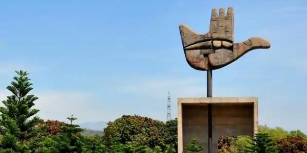

Chandigarh
"The City Beautiful"
Quick Facts
Popular Tourist Attractions
Rock Garden
Famous sculpture garden built from industrial and home waste.
Sukhna Lake
A serene lake perfect for boating and evening walks.
Capitol Complex
A UNESCO World Heritage site designed by Le Corbusier.
Nature & Wildlife
The city has well-planned green belts, gardens like Zakir Rose Garden, and nearby wildlife sanctuaries like Sukhna Wildlife Sanctuary.
Famous Personalities
- Milkha Singh: The legendary sprinter known as The Flying Sikh.
- Yuvraj Singh: Former Indian cricketer and cancer survivor.
Local Handicrafts
Chandigarh is known for contemporary art and craft fairs showcasing woodwork, pottery, and traditional Punjabi phulkari embroidery.
Climate
Chandigarh has a humid subtropical climate with hot summers, a monsoon season, and cool winters.
Culture & Festivals
Festivals
Lohri, Baisakhi, Teej and Chandigarh Carnival are celebrated vibrantly.
Food
Punjabi cuisine including butter chicken, chole bhature, and lassi dominate the palate.
Dance & Music
Bhangra and Giddha are the most popular folk dances here.
Did You Know? Chandigarh is one of the first planned cities of independent India and was designed by the French architect Le Corbusier.
Note: Information may be subject to updates. Kindly notify us of any discrepancies.